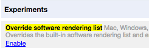

Flooded Streets
Cagayan de Oro City
... flooded roads reported

This is a crowdsourced effort to map flooded roads in Cagayan de Oro City, Philippines.
It may take a while for updates to show.
For Chrome users: if the map is not shown, in your browser, go to
chrome://flags/#ignore-gpu-blacklist
and click 'enable' as shown below. You need to restart your browser after this. 